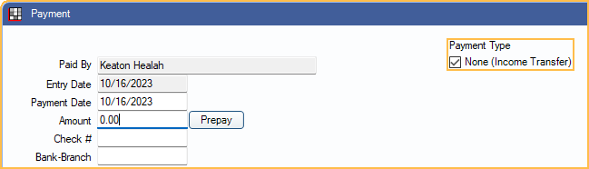

Income Transfer
Create a $0 payment to transfer all or specific unallocated income and negative adjustments to outstanding charges.
In the Payment Window, at the top, check None (Income Transfer).
After creating the $0 payment, check the Payment Type, None (Income Transfer). When checked, the Pay/Add Partials buttons are replaced with Transfer.
Alternatively, use the Income Transfer Manager to transfer all unallocated credits, including unallocated claim payments. To transfer Unearned Income / Prepayments, see Allocate Unearned Income.
- To view this window automatically after receiving a claim payment, enable Show provider income transfer window after entering insurance payment in Preferences.
- Income transfers require the PaymentCreate Permission.
- An Audit Trail entry is logged for income transfers.
An income transfer must include offsetting negative and positive payment splits (paysplits) equal to $0. Follow the steps below to create a manual income transfer.
First, add the negative paysplit to subtract the income source from a patient's clinic and treating provider, or charge:
- Click Add Split to create a new payment split.
- On the Edit Payment Split window, enter a negative amount less than or equal to the income source.
- Less than, to transfer a partial amount (e.g. for an overpayment).
- Equal to, to transfer the entire amount.
- Select the Patient with the income source to transfer (defaults to guarantor). Check Is from another family to select a patient not in the family list.
- Select where to subtract the income from. The income (i.e., a payment) must exist where it is being subtracted from to create a valid transfer.
- Select a Clinic and Provider (and Unearned Type, if applicable).
- Select an Unearned Type
- Procedure tab: Click Attach to select a completed or treatment planned procedure (TP). The Clinic/Provider is inherited from the procedure.
- Adjustment tab: Click Attach to select an adjustment. The Clinic/Provider is inherited from the adjustment.
- Payment Plan: Select the Clinic and Provider assigned to the payment plan, and check Attached to Payment Plan. If the family has multiple payment plans, choose the correct plan from the Select Payment Plan window.
- See Allocate Unearned Income to allocate unearned income instead.
- Click OK to save the negative paysplit.
Next, add the positive paysplit to add the income to a different clinic/provider or charge:
- Click Add Split to create a new payment split.
- Enter a positive amount, less than or equal to the negative split.
- Less than, if adding the income to multiple charges.
- Equal to, if adding all of the income to one charge.
- Select the Patient to transfer the income to.
- Attach the income to a procedure, adjustment, payment plan, or unearned type (one per paysplit).
- Alternatively, if not transferring to a charge, select a clinic/provider combination to add the income to. A charge must exist for the selected combination to complete a valid transfer.
- Click OK to save the positive paysplit.

Create additional positive paysplits until the subtracted income is completely allocated. The total added splits must be zero to complete the transfer.
Once all splits have been created and the Current Payment Splits Total equals 0.00, click OK on the Payment window to post the income transfer as a line item to each affected patient's account.

Transfer Family Balances
To transfer all unallocated credits to any outstanding charges within the family, follow the instructions below. This method does not transfer unallocated insurance payments. Use the Income Transfer Manager instead.
With None (Income Transfer) as the Payment Type checked, the Outstanding Charges grid groups all charges for the family by clinic and provider. Use the Group By dropdown to group charges by Provider or select None to show all charges with a balance.
- The Amt End is the sum of all insurance estimates, write-offs, payments, and charges for the clinic/provider combination.
- A negative Amt End indicates an over allocation of payments and/or positive adjustments for the clinic and provider.
- A positive Amt End is the total amount owed to the clinic and provider.
Click Transfer. Positive and negative paysplits are created for each credit that is allocated to an outstanding charge.
- When the Allocations Setup Paysplit setting is set to Rigorous, transfers that include paysplits without an adjustment, procedure, or unearned type are not allowed. Use the Income Transfer Manager instead.
- If you receive a warning message and/or the income transfer cannot be completed, see Income Transfer Manager for troubleshooting steps.
Click OK on the Payment window to complete the transfer. The account balance of each family member included in the transfer increases or decreases by the transfer amount.
Completed Transfers
Income transfers show as blank payment items with a Txfr code on the Patient Account. Only one, zero credit line item shows if income is transferred from procedure to procedure under the same patient and clinic/provider combination. If income is transferred between multiple patients, and clinics/providers, a Txfr shows for the total negative amount transferred from each patient/clinic/provider combination, and for the total positive amount transferred to each combination.
Transfers also show on reports affecting income allocation only; they do not increase or decrease the total practice income.
Detaching Payment from a Treatment Planned Prepayment
If payment was allocated to a treatment planned procedure that is no longer to be completed, the payment must be detached from the procedure before the procedure can be deleted.
- In the Hidden Splits tab, double-click the Treatment Plan Prepayment.
- Double-click the payment split for the procedure that is no longer to be completed.
- Click Detach. The payment split is still attached as a Treatment Plan Prepayment and to the same provider, but is no longer connected to the procedure.
- If another procedure is being done in the original procedure's place, click Attach:
- Select the new procedure.
- Click OK.
- Click OK.
- Repeat the steps for any additional procedures on the payment.
- Click OK to close the Payment window.
The treatment planned procedures that are no longer to be completed can now be deleted.